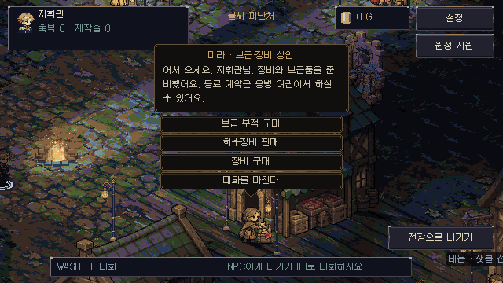

Tracefolio REPORTS & ISSUES
Tracefolio REPORTS & ISSUES 캠프 가디언수정사항
캠프 가디언수정사항NPC 머리 위 디아블로풍 대화 버블
완료NPC 머리 위 중앙에 흑색·황동 대화 버블과 하단 꼬리, 작은 서비스 선택 행을 배치했습니다.
작업 결과
구현·자산 저장·정규화·임포트와 실제 Godot 렌더 확인 완료. 서비스 전환 시 원래 카메라 복원 확인.
변경 내용
적용 내용
npc_dialogue.gd에서 옆 배치를 NPC 머리 위 중앙248px 버블로 변경했습니다. 그을음 흑색 바탕·얇은 낡은 황동 테두리·뼈색11px 글자·금색 선택 강조와 작은 독립 서비스 행을 사용합니다. 아래쪽 꼬리는 NPC 중심을 가리킵니다. 대화 중 NPC를 화면 아래쪽에 프레이밍하며 town.gd의 공통 조명 갱신을 분리해 카메라 이동과 조명을 동기화합니다. 대화 종료와 서비스 전환에서 렌더 카메라를 복원합니다. town_names.gd에서 말하는 NPC의 중복 이름표를 숨깁니다. tools/export-dialogue-tail.py에서 새 프레임2종·하단 꼬리를 생성하고 세 PNG만 정규화·임포트했습니다. 아트 방향·제작 절차·변경 이력·스타일 데이터를 동기화했습니다. 공통 지침 변경 없음.

검증
Godot 4.7.2 OpenGL Compatibility/GTX 970 실제 렌더 PNG 확인. 미라 한국어 대사의 하단 여백·머리 위 위치·중복 이름표 제거 확인. choices=4, root=(196,56), tail=(311,240), anchor=(320,251), NPC feet=(320,309), data.errors=[]. 서비스 버튼 신호 실행 후 bubble_removed=true, camera_restored=true. 종료코드0. 별도 테스트·회귀 테스트 미실행.
남은 사항
다른 NPC·전체11개 언어·실제 마우스/키보드 입력 및 사용자 최종 디자인 승인은 미확인. 사용자 캐시 폴더 쓰기 권한 경고와 종료 시 기존 GL 텍스처3개 정리 경고가 발생했습니다. 프로젝트 빌드·커밋·푸시·배포 미실행. 중앙 보고 게시 상태는 등록 후 별도 확인.
작업 시간
- 제안 시간: 5~10분. 시작 2026-11-18 14:00:05 KST.
- 실제로 완료된 시간: 구현·최종 렌더 확인 완료 2026-11-18 14:04:16 KST, 실측 252초. 중앙 등록 시간 별도.
- XERJ: 미사용 — 로컬 구현·스타일 자산과 실제 Godot 렌더 및 카메라 복원 로그를 사용했습니다.